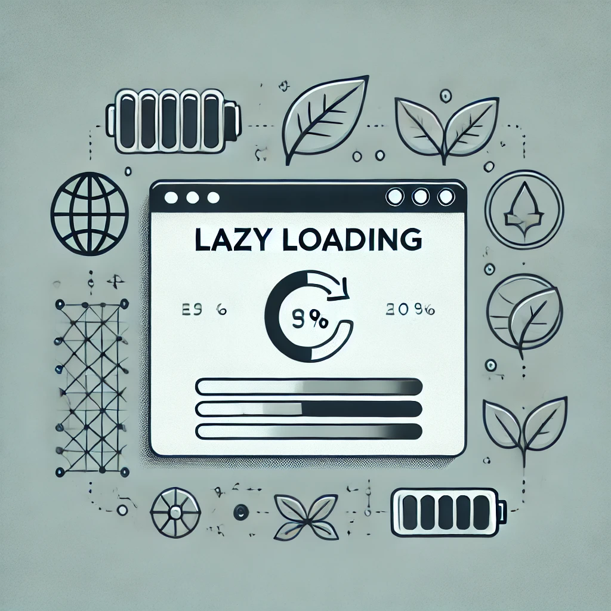

1. Energieffektiv kode
Lagret data lokalt for å unngå unødvendige forespørsler.
<script>
if (!localStorage.getItem("melding")) {
localStorage.setItem("melding", "Dette er lagret lokalt!");
}
console.log(localStorage.getItem("melding"));
</script>
2. Optimalisering av bilder
Bruk av WebP for å redusere filstørrelse.
<picture>
<source srcset="bilde.webp" type="image/webp">
<img src="bilde.jpg" alt="Optimalisert bilde">
</picture>
3. Lazy loading
Last inn bilder kun når de trengs.
<img src="bilde.jpg" loading="lazy" alt="Effektiv bildelasting">
4. Effektiv løkke i Java
For-løkker kan være mer effektive enn for-each-løkker i visse situasjoner.
public class EfficientLoop {
public static void main(String[] args) {
int[] numbers = {1, 2, 3, 4, 5};
for (int i = 0; i < numbers.length; i++) {
System.out.println(numbers[i]);
}
}
}